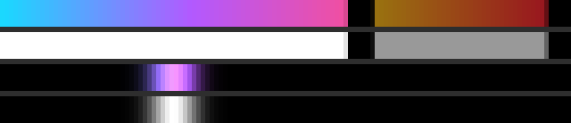
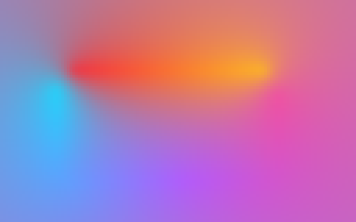
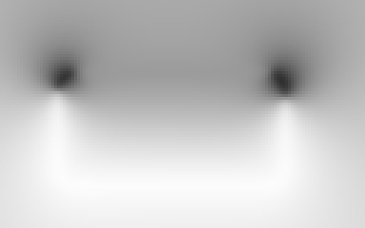
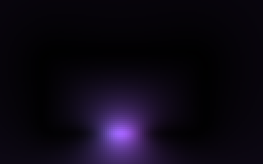
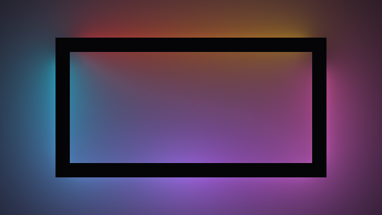
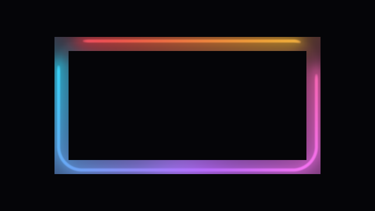
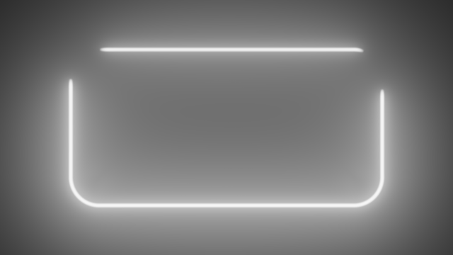

NeonRenderer · one frame, pass by pass
One frame of a 440 × 220 rect in a 640 × 360 frame at resolution scale 0.5, then the same scene at 1.0, read back between the renderer’s draws: every program’s own output, at the resolution it actually runs - and why each of the nine programs exists.
The scene has something in every buffer: an arc over t 0 to 0.6 on the base gradient, a dimmer arc (intensity 0.6, its own orange-to-red stops) over 0.65 to 0.95, dark gaps between them, and a segment at 0.3. The images are the ones Part 6 of the onboarding guide uses; tools/neon-guide-figures renders them.
Below scale 1.0, in frame order
Everything the sample loop needs that does not depend on the pixel, baked once per perimeter sample. Each sample is one column, drawn 5 px wide, with t = 0 at the left. Top to bottom:

For each of the outline’s eight pieces, how lit that piece is as the halo and the bloom see it from any fragment position round it: the piece’s own coverage over its own extent, weighted by each layer’s kernel - in closed form for the arcs, integrated numerically for the segments’ bells. Each of four bands holds a straight at its left (the projection along it across, past both ends at the sides; the distance from the line down) and a corner at its right (the direction from the arc’s centre across, the distance from it down, the arc itself halfway), the two sharing the band’s columns in proportion to their lengths. The halo and bloom are a sum over those pieces, and every shading pass - P1b, P2c, and P1 at scale 1.0 - scales each piece’s share by its own read of this table, one linear fetch per piece. Baked on a config change only; its lengths enter only as ratios, so both resolution paths share it.
t = 0.3 as the halo sees it - only on the pieces it reaches.The sample loop, about 95% of the neon’s cost, run once per texel of a coarse grid: about two texels per colour-kernel width. Its results vary slowly enough that the later passes read them back with a bilinear fetch. Shown 4× with nearest-neighbour scaling, so the texels stay visible.


c/(1+c). Darker where the outline nearby is dim or dark.
Everything except the loop, shaded at half resolution from the gather buffer. The glow holds up at this size; the line comes out blocky. Shown 2× with nearest-neighbour scaling.
The reduced buffer upsampled onto the frame, everywhere the glow can reach except a thin ring around the outline. It also draws the one-sided cut and the cutoff edges at full resolution. The black band is the ring’s area, still empty.

The same source as P1b, with its uniforms uploaded as if the scale were 1.0. It reshades the band where the line and every hard edge live, reading the gather buffer for colour and coverage. Its strips share their edges with the blit’s, so no pixel is drawn twice.

At scale 1.0
With no segments, everything neon.frag computes is the gathered hue times a brightness that does not depend on it: tonemap(col × Fa), provided nothing is applied after the tone map. Only col moves when the hue rotates. So this pass runs the whole shading once with the hue fixed at 1 and stores Fa, the brightness before the tone map, in one half-float channel. Offscreen, unblended. At 1.0 a one-sided glow or a cutoff is multiplied in after the tone map, so a config with either shades directly instead (it used to take a mask in a second channel, which no frame below 1.0 ever needed). After a config change it waits until the config has held for a frame, so an animation that changes the config every frame never pays for a bake it cannot reuse; only the first frame a config the field can serve is drawn bakes at once, alongside P1, because this driver finishes compiling a program on its first draw and a bake left for the next frame stalled it ~125 ms. Below 1.0 the same pass runs at the reduced scale on the reduced buffer’s own grid - where the blit applies the cut and the cutoffs, so every config is unmasked - and only with the hue rotating - the one frame type below 1.0 that redraws the shading with nothing but the time moved. Captured on this scene without its segment, since segments keep the field off.

Fa, shown through the tone map: the glow’s brightness in white light. The colour is added by P1c.The whole shading, on every pixel of the glow quad, from the same gather buffer the scaled path reads - the edge ring’s program over the whole quad instead of a band. It draws a frame the field cannot: the first after a config change, every frame of an animation that changes the config, and every frame of a config with segments. The page’s scene has a segment, so this is how it draws at 1.0 on every frame; below 1.0, P1a through P2c rebuild this picture.
P1’s picture from P1f’s field: each pixel reads its field texel and the gathered hue, multiplies, and tone-maps with the same function neon.frag uses (neonToneMap). Two fetches and a tone map instead of the whole shading - on every still frame and every frame of a rotating hue, the library’s default. Within 1/255 of P1. Below 1.0 the same program writes the reduced buffer, unblended, in P1b’s place on every frame of a rotating hue, and the blit and the ring carry on as before: 1.55x on those frames at 0.5, 1.98x at 0.75 (I50).
Why each program exists
Every program is built on the first frame that needs it, so a host compiles only its own: at scale 1.0 with no partly lit ring, six (P0, P1a, P1f, P1c, the ring’s P1 and the fill); the coverage table adds P0b; below 1.0, P1b and the blit replace the field’s two. Each row says what the program is for and why it is not folded into another.
| Program | What it is for | Why it is its own program |
|---|---|---|
P0 mEmissionShader |
Each perimeter sample’s colour, arc weight and segment bells, once per frame for 128 samples. | That work depends only on the sample, the time and the config. Done here, the gather’s cost per texel is O(samples) instead of O(samples × (arcs + segments)). Runs only when an input moves. |
P0b mGlowCoverShader |
How lit each of the outline’s eight pieces is, as the halo and the bloom see it - only for a partly lit ring. | Closed-form integrals per arc and a 16-point quadrature per segment over a 1024 × 128 table. Evaluated per pixel in neon.frag instead, a partly lit ring measured 2.0x / 3.3x slower at scale 1.0 / 0.5; too much for the CPU when a segment moves every frame. |
P1a mNeonGatherShader |
The sample loop - the colour of the ring near each point and how lit it is. | The loop was ~95% of the neon’s cost when every pixel ran it. Its results are smooth, so it runs on a coarse grid (about two texels per colour-kernel width) and is read back bilinearly: 2-4x on a large quad. |
P1b mNeonShadeShader |
The glow at the reduced scale, below 1.0 only. | The same source as the ring, compiled twice so each program draws one target in one blend state a frame: one program drawing an offscreen buffer unblended and the framebuffer blended in the same frame measured 93-624x slower on the AMD macOS driver. |
P2c / P1 mNeonRingShader |
The full-resolution shading: the edge ring below 1.0, the whole glow quad at 1.0 when the field cannot serve the frame. | The only program that draws the filament and the hard edges at full resolution; every other glow pass reads a buffer or draws offscreen. |
P2b mBlitShader |
The reduced buffer upsampled onto the frame outside the ring, below 1.0 only. | It also applies the one-sided cut and the cutoffs at destination resolution: drawn inside the reduced buffer, a mask is smeared over 1/scale pixels by the upsample (59/255 on the dark side of a cut at 0.5, measured). |
P1f mNeonFieldShader |
The hue-invariant field: the glow’s brightness with the hue fixed at 1, before the tone map - for a config without segments (nor, at 1.0, a one-sided glow or a cutoff), on its first frame and once it has held after a change; below 1.0 only with the hue rotating. | See below - the field is the cheap path at 1.0 and on hue frames below it, and the bake cannot share a program with the passes it replaces. |
P1c mFieldCompositeShader |
The field times the gathered hue, tone-mapped, in P1’s place while the field holds - or below 1.0 in P1b’s, into the reduced buffer. | Two fetches and a tone map a pixel, where P1 runs the whole shading - the field’s saving lives here. |
P2a mBlackRectShader |
The opaque fill under the glow, only with an opaque mode. | Its own shape and its own cutoffs, always at full resolution; usually a scissored clear stands in and the program does not run. |
The field is what makes scale 1.0 cheap. Without P1f there is nothing for P1c to read, and every frame at 1.0 - still or hue rotating, the library’s default - runs P1’s whole shading on every pixel of the glow quad. Measured on the check suite’s default scene at 1920 × 1080: on an AMD Radeon Pro 5300M, 0.07 ms a still frame and 0.24 ms with the hue rotating, against ~1.06 ms for a frame P1 draws - one whose config changes every frame (about 15x and 4x); on an Apple M2 Pro, 9x still and 4x with the hue rotating when the field landed (I46). And a still or hue-rotating frame is what a host shows most of the time. Below 1.0 it does the same for P1b on hue-rotating frames, the one frame type there that redraws the shading with only the time moved: 1.98x at 0.75, 1.55x at 0.5, 1.21x at 0.25 (I50, same GPU, twelve scenes) - though 1.0 stays the cheaper scale for those frames, since the blit and the ring are full-resolution costs the field does not touch.
It cannot be the ring’s program. Three things separate it, and each is a reason:
Fa before the tone map - one half-float channel - where every other neon.frag program writes a finished, premultiplied colour. As a compile-time define (NEON_FIELD_BAKE) that difference costs the hot shading program nothing; as a runtime switch it would add branches to the program every animated frame at 1.0 runs, and this compiler has slowed that program for code no frame executes.FIELD_MIN_FILL) - so a host that never uses the field never compiles it.The alternatives were weighed: baking with the ring’s program behind a uniform would save one compile on the first settled frame at the price of reasons 1 and 2, and baking with P1b’s program saves nothing at 1.0, where that program is not otherwise built. What the field must keep is an invariant of neon.frag: anything new there that reads the hue other than linearly, reads time, or multiplies after the tone map on a config the field takes breaks the factorisation, and has to extend NEON_FIELD_BAKE and neon-field.frag together.